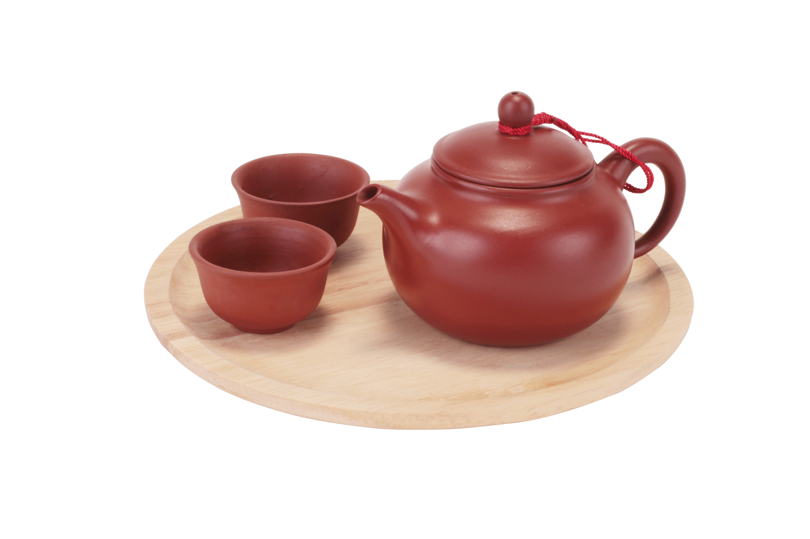

台湾の「お茶」
Rindayla（リンデイラ）は台湾茶をより多くの人
に知って楽しめるために立ち上げたブランドです。
台湾茶の特徴は香りが強く、それと飲んだ後にお茶
の後味“甘味”が喉から昇りってきます。
台湾茶の種類は多くあって、私たちRindaylaは
その中から主流や人気がある10種類を選び出し、
美味しいお茶をお届けします。
Rindayla（リンデイラ）は台湾茶
をより多くの人に知って楽しめるた
めに立ち上げたブランドです。
台湾茶の特徴は香りが強く、それと
飲んだ後にお茶の後味“甘味”が喉か
ら昇りってきます。
台湾茶の種類は多くあって、私たち
Rindaylaはその中から主流や人気
がある10種類を選び出し、美味しい
お茶をお届けします。

台湾の茶道
お茶を美味しく淹れるために一番重要な
もので、お茶の味を引き出す主役が茶壺
です。
茶壺の形が多様で、大きさや材質の違い
で違うお茶適している。
いい茶壺はお茶の味をより良くする以外
に、観賞用やコレクションの品にもなり
ます。
お茶を美味しく淹れるため
に一番重要なもので、お茶
の味を引き出す主役が茶壺
です。
茶壺の形が多様で、大きさ
や材質の違いで違うお茶を
適している。
いい茶壺はお茶の味をより
良くする以外に、観賞用や
コレクションの品にもなり
ます。
詳しくはこちら→